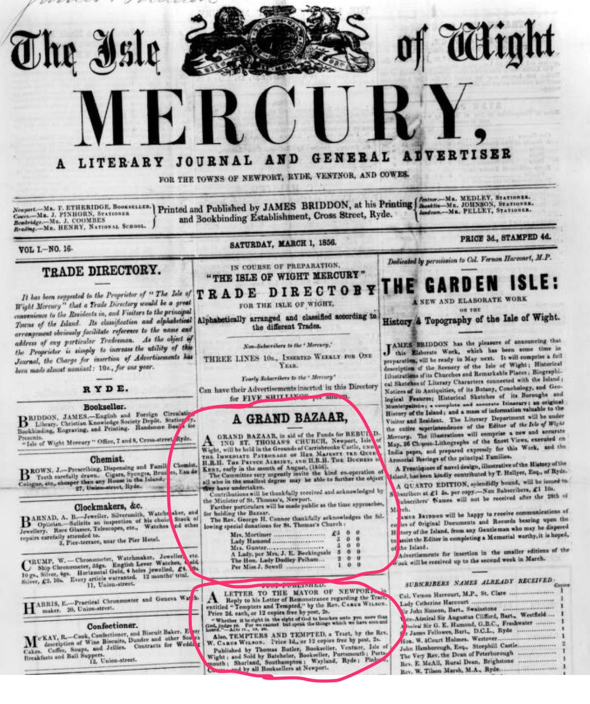

The Pittis Libel Case#
Upon receipt of the Mayor’s letter challenging the claims made in “Tempters and Tempted”, Carus Wilson had been quick to pen a public response in a second tract, *A LETTER TO THE MAYOR OF NEWPORT, in Reply to his Letter of Remonstrances regarding the Tract, entitled “Tempters and Tempted”.
Pamphlet adverts, March 1856
Isle of Wight Mercury - Saturday 01 March 1856
JUST PUBLISHED.
A LETTER TO THE MAYOR OF NEWPORT, in Reply to his Letter of Remonstrances regarding the Tract, entitled “Tempters and Tempted,” by the Rev. CARUS WILSON. Price 2d. each, or 12 copies free by post, 2s.
“Whether it be right in the sight of God to hearken unto you more than God, judge thee. For we cannot but speak the things which we have seen and heard.”—Acts iv., 19, 20.
Also, TEMPTERS AND TEMPTED, a Tract, by the Rev. W CARUS WILSON. Price 1d, or 12 copies free by post, 2s. Published by Thomas Butler, Bookseller, Ventnor, Isle of Wight ; and Sold by Batchelor, Bookseller, Portsmouth; Sharland, Southampton ; Wayland, Ryde ; Pinhorn, Cowes ; and by all Booksellers at Newport.
But if Tempters and Tempted hadn’t been libelous, then various parties seemed to think the response certainly was. So much so, in fact, that Mayor twice previously, and Alderman of the Borough, Francis Pittis, Esq., felt compelled to bring the matter of a perceived slur on his good name to a court of law.
As the Isle of Wight County Press of Saturday 09 November 1889 would recall in recording the death of Sir Francis Pittis, as he then was,
[h]e was first elected to the Mayoralty in 1852, and he was re-elected in 1853. This year was rendered memorable by the visit of the late Prince Consort to the town for the purpose of laying the foundation stone of the parish church —the stately edifice of which the inhabitants of Newport are so justly proud. As Mayor of the borough it fell to Sir Francis to receive and entertain His Royal Highness, and the dignified manner in which he represented the town on that occasion won universal admiration.
And it was likely the widespread knowledge of this act, at the time, that was to form the basis of the libel claim.
The trial was widely reported, although the detail differs in the extent of he detail offered respects across each of the accounts.
The charge laid was that the Rev. W. Carus Wilson, “for having written a false and scandalous libel on his character”, and the courtroom was packed. Carus Wilson, however, was not presence, a Medical Certificate justifying his absence.
Libel Case, March 1856
Isle of Wight Mercury - Saturday 01 March 1856
COUNTY POLICE
Libel Case.— An extraordinary meeting of the County Magistrates was held on Monday, at the Guildhall, to hear the charge made by Mr. Francis Pittis, of Newport, against the Rev. W. Carus Wilson, for having written a false and scandalous libel on his character. The court-room and gallery were crowded with persons of interest of the Town, and other parts of the Island. The Bench consisted of the Hon. a’Court Holmes (chairman), Sir John Simeon, Bart., Capt. Kerr, Capt. Brigstocke, Thomas Cooke. and J. A. Hambrough, Esqrs.
Mr. Eldridge appeared for the prosecutor, and Mr. Ford for the defendant. The latter handed in a Medical Certificate that the health of the defendant would not allow of his appearing that day. The case proceeded without his presence.
The prosecution opened by establishing the undoubted worth of a man retaining his good name, before describing how Alderman Pittis was no “apologist for vice”, although he was bound to only prosecute those cases brought before him.
A man’s best inheritance
Mr. Eldridge observed that it had been said a good name was a man’s best inheritance, it certainly was above all earthly treasure. He was bound to say, his client had the respect of all who knew him, and he must say that the high and honourable position which Mr. Pittis holds, as Alderman of the Borough, makes him careful of not allowing even shadows to be cast on his reputation. In a certain tract, imputations are thrown on his character, and although he feels free front all aspersions, he could not allow them to pass, whether intended or not, without a public denial of their application. He believed they were not intended, but that the defendant, with great zeal, had exceeded his duty ; for when a man steps out of his way, on the delicate ground of private character, he must treat the subject in a delicate manner, and not rush hastily to commit wrong; because he might think there was some good in the distance. No one who reads the tract and pamphlet, can doubt that they reflect seriously on the character of the town, and on individuals; it is not simply a degree of bitterness, but there are the most unwarranted innondoes. He did not stand as an apologist for vice; but it was a most unfortunate circumstance, that when a memorial had been presented to the magistrates which they admitted would check crime and immorality, that these works should have been brought out. He admitted there was much evil, and when he had the honour of filling the office of first magistrate, he, like those in office now, could only deal with cases brought before him. There were cases of gross immoral houses always complained of, by parties, who would never come forward to prove the cases within their own observation.
It seems that the pamphlet may have made mention of the apparent allegations that Mr. Eldridge, qua Town Clerk, rather than just as Pittis’s retained prosecutor, had made regarding the Town Missionary’s report book in the Council meeting where the mayor had stood up to take issue with Carus Wilson’s original “Tempters and Tempted” tract. Eldridge claimed he had been “misunderstood and misreported” and had not been secretly received scurrilous information about anyone in authority by means of the report book.
A certain journal
Plain allusions had been made in the pamphlet to the Town Clerk,—he would say, that his observations in the council were misunderstood and misreported. He was sensible of the evils in the Town, and with others had endeavoured to diminish the amount. A certain journal came before him, but only shewing the operations of the society. It did not refer to any member in the council, or to any one in authority; it was merely a record of the poor persons who had been visited. An apology of an ample character having been given completely satisfactory, Mr. Pittis felt he had done his duty to himself, and wished to show he had no vindictive motives.
The report then suggests a letter was read out, but in this report at least, it is not clear what letter.
Note
A letter was then brought forward and read.
This is followed by a statement for the defence, which appears to justify the claims that Carus Wilson had made, but also that any perceived libel was a very particular misreading of a more general statement that had been intended.
Representing Mr. Wilson
Mr. Ford said he represented Mr. Wilson, and he regretted that of the observations made by Mr. Eldridge, would compel him to say more than he had intended, which was simply to offer the fullest apology and explanation to Mr. Pittis. Mr. Eldridge had shown that Mr. Wilson was fully justified in the course he had taken, by the admissions made by himself: on the part of Mr. Wilson he was instructed to say, that that gentleman had the fullest confidence in the integrity and strict morality of Mr. Pittis, and that the quotation from the letter of a friend at Bristol, although one or two circumstances appeared to correspond, had no reference to him, and he begged again to say that there was no imputation intended to be conveyed, and read the letter purporting to be one from Bristol.— Mr. Ford said that if there should be a republication, the passage affecting Mr. Pittis should be taken out.
This particular report then suggests there was some sort of interruption, but does not clarify the detail:
An expression of dissent
Mr. Hearn attempted to express his dissent from the course adopted, but was stopped by Mr. Ford, who said that he and the bench had only to do with Mr. Pittis, it was quite irregular.—The chairman after a consultation, said, that as the case had been compromised, they were of opinion that Mr. Hearn should not be heard. Others were affected besides Mr. Pittis.— Mr. Hearn said that others were implicated in the charges, and the apology was made to them, he would not be precluded from taking proceedings in another place.
A settlement then takes place, with Pittis accepting the apology made on Carus Wilson’s behalf.
An expression of dissent
Mr. Eldridge observed that Mr. Pittis felt that after this ample apology, he should not be acting as a man or a Christian to press the case.— The chairman said that the course pursued was very creditable to both parties. Mr. Pittis very properly came forward to vindicate his character from the vile suspicion. With regard to the pamphlet, every one must see that it was intended for Mr. Pittis, but no one would believe it of him. He hoped Mr. Wilson’s friends would advise him better than to re-issue the tracts. He could not perhaps control his zeal, but he hoped he would not use it in such an uncalled for way. He was sorry that Mr. Pittis should have had occasion to appear that day. Mr. Wilson said the quotation did not apply to Mr. Pittis, and they were bound to believe him.
In passing, I note the very next article in the column was championing a forthcoming event in support of the “new Church Building Fund”.
A grand Bazaar
Isle of Wight Mercury - Saturday 01 March 1856
ST. THOMAS’S CHURCH, NEWPORT.— We have much pleasure in calling the attention of our readers to an advertisement in our columns of a grand Bazaar to be held, in August next, under the patronage of the Queen, at Carisbrooke Castle, for the purpose of augmenting the Building Fund of the new Church of St. Thomas at Newport. We are convinced our lady readers will gladly seize this opportunity of encouraging art in connection with religion, by donations to the Bazaar of those curious and highly interesting speeimens of ingenuity in needlework, crotchet. chenille, &c., &c., &c., which only ladies can fabricate. At the same time, it will be in the power of the husband, the tither, the son the brother, to devote his sympathy by contributions of boaks. paintings, or “hard cash.”— Now this is not a local matter : it appeals to the sympathies of all who love high art. Indeed, every islander is interested in the decoration of the capital of the Island by so noble a specimen of ecclesiastical architecture, —by a structure so vividly exemplifying the pure and refined principles of a cultivated taste as the new Church of St. Thomas. Let it not be said that the Inhabitants of the Isle of Wight are insensible to the beauty of art, when devoted to its grandeat purpose—the illustration of religion.
The advert mentioned for the Bazaar appeared on the front page of the paper. It also just happened to be immediately followed by an advert for Carus Wilson’s pamphlets!

The Isle of Wight Mercury report of the libel case seems rather concise, even garbled, so can we learn any more from other reports?
In the report in the Hampshire Telegraph of Saturday 01 March 1856, which is immediately preceded by the report of the unprosecutable arrest James Lewis for selling Carus Wilson’s response to the Mayor, has rather more detail.
The report opens by reviewing the circumstances that led to the Mayor’s letter to Carus Wilson, and the response it provoked.
Denunciations and denial, March 1856
Hampshire Telegraph - Saturday 01 March 1856
“TEMPTERS AND TEMPTED.”
At the County Police Court, on Wednesday, before the Hon. A’Court Holmes, Chairman, Sir John Simeon, Bt., Capt. Kerr, Thomas Cooke, Esq. Capt. Brigstocke, R.N., and J. A. Hamburgh, Esq., the Rev. Wm. Carus Wilson was charged with writing a false, scandalous, and malicious libel on Mr. Francis Pittis. The Court was crowded in every part, and the proceedings excited the most intense interest. The libel arose out of the publication of a tract, “The Tempters and Tempted; or a solemn Address and Warning to the Inhabitants of the Town And Neighbourhood;” in which the state of morals is put as the very worst that language can describe; and fierce denunciations are hurled on its devoted population. At a meeting of the Town Council a strong denial of the justice of the charges was made and the conduct of the conduct of the author, Mr. Carus Wilson, his informants, and the distributors of the tracts, was severely condemned. The Mayor was requested to write to Mr. Wilson a statement of the views and feelings of the Council on the subject, which he complied with ; and then Mr. Wilson wrote and published answer to the letter, as a tract, in which the former charges were repeated, and many new ones made. The charge against Mr. Pittis was of that gross character that he felt it to be his duty to take criminal proceedings against Mr. Wilson, and the Magistrates now assembled to hear the case. Mr. Eldridge was engaged for the prosecution, and Mr. Ford, of Portsea, for the defence.
Mr. Ford handed in a medical certificate that the state of the health of the defendant would not allows him to appear in Court ; and, after some delay, the case went on in his absence.
Again, we hear how Eldridge asserted a man’s right to his own good name, as well as how steps were being taken to address some of the concerns Carus Wilson had raised even as he was raising them
A man’s good name is his best inheritance
Mr. Eldridge stated that a man’s good name was his best inheritance; it certainly was his highest earthily treasure ; and he must say that from the high and honourable position held by Mr. Pittis in private life, and as an Alderman of the Borough, he could not allow the aspersion cast on his character by the letter of the defendant to pass without public notice and contradiction. He did not believe that the defendant intended wrong; but with great zeal, he did not unite that care which ought to guide the course of one who takes part in public affairs— for when a man steps out of his way on the delicate ground of private character, he should touch it gently, and not rush hastily and do injustice because he fancies there is some good to be done in the distance. No one can read the pamphlet but must observe it reflects most severely on the character of these attacked: it is not simply a reply to the letter of the Mayor, but it displays a degree of bitterness and unwarranted inuendo against others, highly to be condemned. He did not stand there as an apologist for vice or immorality, but it was an unfortunate circumstance, that just at the time that a memorial had been presented to the Magistrates, and measures were in progress to remedy some evils, that the rev. gentleman should have made such attacks; he and others should know that magistrates could only deal with cases brought before them. While Mr. Pttis had the honour of sitting as first magistrate of the borough, those very persons who complained of the gross immorality of houses in their immediate neighbourhood, could not be induced to come forward to give evidence necessary to ensure a conviction. Allusions had been made to himself (the Town Clerk), and his observations had been misunderstood and misrepresented respecting a certain journal that came before him. Now that journal did no refer to any member of the Council, or persons its authority, but merely to the cases visited by the Town Mission, persons of the lowest class. He felt pleased that he should not take up the further time of the Court by this pressing the case, as an ample apology had been sent from Mr. Wilson, which would be read; and he considered Mr. Pittis had done his duty in vindicating his character.
Mr. Ford’s defence is then reviewed, and with it the letter that was only mentioned in the previous report.
A letter from Boniface House
Mr. Ford said, he had the honour to represent the Rev. Carus Wilson, and but for the observation of the gentleman who had brought the case before the Court, he should give an explanation, and express regret that the passage was supposed to refer to Mr. Pittis. He must now say, that his client was perfectly justified in the course he had taken; and Mr. Eldridge’s remarks confirm the correctness of the state of the town. On the part of Mr. Wilson he begged to state, that he had the highest opinion of the great respectability, integrity, and strict morality of Mr. Pittis; he begged again to say, that no imputation was intended to be conveyed. He then read the following letter :—
Boniface house, Feb. 23, 1856.
[To: “F. Pittis, Esq.”]
“Dear Sir,— Your letter to Mr. Gustar has been read to me in bed, from which serious illness prevents me rising.
I cannot delay a moment in relieving the wounded feelings which must necessarily have been created if you supposed that I intended to make the slightest reference, directly or indirectly in any part either of the tract or letter, to yourself or any other magistrate of the town of Newport.
“The passage you refer to was entirely taken from a letter sent me from Bristol, from a party wholly unacquainted with Newport, as a comment upon my endeavours to show where the root of the evil too often lies, and was wholly of a general character and irrespective of any particular locality. I particularly regret that any one should have supposed the passage to refer to yourself, as I had always heard and thought of you with the greatest respect.
“I am, Sir, your’s faithfully,
Wm. CARUS WILSON.
We also learn a little more about Mr. Hearn’s interruption regarding other libels he claimed Carus Wilson had made.
The Mayor protests other libels
Mr. Hearn said, as Mayor he was not satisfied; the other libels on the Town and individuals remained uncontradicted.
Mr. Ford protested that the observations of Mr. Hearn were irregular ; he had only to do with Mr. Pittis.
Mr. Hearn.— There are other charges, and this will not preclude me from taking proceedings in another court.
Mr. Eldridge said of Mr. Pittis that “he feels after the ample apology he should not be acting as a man or a christian to proceed further in the case.”
The Chairman observed, that the course pursued was very creditable to both parties. Mr. Pittis vindicates his character from the vile suspicion which might have rested on it, although there was no response in the public, for although all must know that the passage applied to Mr. Pittis, no one would believe there was any foundation for the aspersion. No person could help his zeal, but he trusted Mr. Wilson would direct it better; he hoped he would not re-issue tracts to wound the feelings of others in such an uncalled for manner; and he was sorry Mr. Pittis should have had occasions to appear there that day. Mr. Wilson said that the passage was not intended to apply to Mr. Pittis, and perhaaps they were bound to believe it.
A third report, this time in the Hampshire Advertiser, reveals a bit more about why Mr. Pittis felt he had been libeled.
The opening provides an implicit set up by mentioning the failed prosecution of James Lewis, aka Nobby Ducks (or “Dux”) for selling “libelous” copies of Carus Wilson’s tract a couple of days previously.
Defamation of character, March 1856
Hampshire Advertiser - Saturday 01 March 1856
CHARGE AGAINST THE REV. WM. CARUS WILSON FOR DEFAMATION OF CHARACTER.
The town has been in a state of ferment for the last few days, in consequence of a second pamphlet published by this gentleman, in reply to a letter from the Mayor, J. H. Hearn, esq. on behalf of the town, condemnatory of his proceedings in reference to his first tract. There being certain portions in this last pamphlet which were considered libellous, and particularly in one apparently glaring instance, whereby the character of a principal tradesman of our town was believed to be maligned, placards were issued cautioning persons against their circulation; and on Saturday James Lewis, alias “ Nobby Dux,” was taken to the Station-house, and bound over in his own recognisances for his appearance to answer the charge of publicly selling this obnoxious tract in the Beast Market on that day. On Monday he appeared before the Borough Magistrates, but was dismissed, as the charge of libel concerning Francis Pittis, esq. by the rev. defendant was just about being proceeded with.
The Town Hall was crowded to excess for some considerable time previously to the case coming on.
The Hon. A’Court Holmes occupied the chair, and on the Bench we observed Sir John Simeon, bart. Captains Brigstocke and Kerr, A. Hamborough, esq. and other gentlemen. The charge against the rev. gentleman was, “That he unlawfully and maliciously did publish a certain false and defamatory libel of and concerning Francis Pittis.”
James Eldridge, esq. (brother-in-law of the plaintiff) attended for the prosecution ; and Henry Ford. Esq. (of the firm of Messrs. Ford, solicitor, of Portsea) appeared for the defendant.
The Rev. Carus Wilson was not present, and Mr. Ford put into Court a certificate of illness, stating he was confined to his room from indisposition.
The case presented by Mr. Eldridge on behalf of Mr Pittis is described in rather more verbose detail than in the previous reports, but even though the location of the slur is identified in the tract — the 13th page of the last pamphlet — it is still not clear what the libelous claim that Mr. Pittis inferred actually was.
The 13th page of the last pamphlet
J Eldridge, esq. opened the case by observing it had been well said that a man’s good name was his wealth, and anything uttered derogatory to his fair fame was calculated to be injurious to him in many respects. Thus Mr. Francis Pittis, for whom he that day appeared, felt himself bound to vindicate his character against the aspersions which he considered had been made by the Rev. Wm. Carus Wilson respecting him, in a pamphlet he had lately addressed to the Mayor of Newport, and which had been the cause of the present legal proceedings. Mr. Pittis held a high and honourable position as an Alderman of their borough, and his standing in society was such that he was certain his fellow-townsmen would never attach to him the slightest imputation of the nature contained in that tract. Therefore, he could not but prosecute the present proceedings, which he felt was due to himself and to the town, however painful it was to his feelings to do so. He would not say that the rev. gentleman did, by the publication of that pamphlet, wittingly and maliciously asperse and defame the character of Mr. Pittis. although it was evident a certain paragraph in it did refer to him, and must have had that effect had not the present proceedings been instituted. He (Mr. Eldridge) believed that the defendant was a good man, and no doubt meant well ; but he had acted most indiscreetly. According to his own showing he was on delicate ground; and when a person stepped out of his way, even with the philanthropic object he professed to have in view, he should be careful how he rudely trod upon the fair fame of one whom he acknowledged not even to have known by name. A great deal had been said in the town about another tract- “Tempters and Tempted,” out of which the present pamphlet had originated. Of the merits or demerits of this first tract he would say nothing, as the libel which Mr. Pittis complained of was contained in the latter ; and no one reading certain lines in the 13th page of the last pamphlet, and acquainted with his client, and events which had happened in their town within the last three years, could have the slightest hesitation in saying that they referred to him and reflected upon his character.
Mr. Eldridge’s identification of Mr. Pittis’s attempts to do what he could to address the “open immorality” on display in the town are also described in more detail than in the previously mentioned reports.
No apologist for vices too common in their town
He (Mr. Eldridge) felt himself bound further to say, that besides the false and defamatory libel he bad referred to affecting the character of Mr. Pittis, the pamphlet was, in his opinion, not dictated by a Christian spirit; it was penned with a degree of bitterness and exaggeration, and contained unfounded imputations, inuendoes, and sweeping censures, injuriously affecting the character of the Magistrates of the borough, and the inhabitants of the town generally, and not at all creditable to the position of the defendant as a gentleman and a clergyman. Whilst he spoke thus stringently of his conduct, he would wish to be understood that he did not stand there as the apologist for vices which were, unfortunately, too common in their town, although he believed not more so than in other localities; neither did he uphold the evil doings of such men who were well described by the reverend gentlemen as “ the mean and dastardly betrayers of female innocence.” It was unfortunate for the case of Mr. Wilson, that his pamphlet did not appear until after the Magistrates had earnestly directed their attention to the moral state of the borough, in which they had been strengthened by an influential memorial which had been presented to them, and he (Mr. Eldridge) felt happy in stating that the authorities had not been slack in determinedly and impartially using their endeavours to put down vice and immorality in the town. It was due to them that he should thus publicly state this fact, and he considered it was right the rev. gentleman should know it. He (Mr. Eldridge) had filled the office of Chief Magistrate of their borough, and, consequently, knew from experience they could deal with open immorality only. He instanced a case which came under his own knowledge while presiding over them as Mayor. He knew there was a certain house of ill-fame, where the worst of vices were carried on ; he went to the neighbours, who were cognisant of the fact and the only parties who could testify to it ; but none could be induced to give the necessary testimony, in consequence of which his efforts to remove the evil were frustrated. He mentioned this circumstance to show the rev. gentleman and his informants how difficult it was to deal with such cases.
Mr. Eldridge then went on to defend what he felt were misrepresentations of his own statements in the Council meeting where the Mayor felt obliged to make a public stand against the charges levelled in Carus Wilson’s first tract, before suggesting that Mr. Pittis would drop his suit if an appropriate apology was provided.
No record impugning the characters of those not under actual visitation
Reference had been made to him in the pamphlet, as to what he, as their Town Clerk, had said at a late Town Council meeting, in a discussion on the defendant’s first tract. He must be permitted to say that his observations on that occasion had been misrepresented in the town, and somewhat mis-reported, and from these circumstances certain parties in the Town Council had been pointed to as if his remarks had referred to them. He wished thus publicly to state, that while there were many things in the Town Missionary’s journal, showing the immoralities which unhappily existed among those he was in the habit of visiting, there was no record impugning the characters of those not under actual visitation. What he then was about to state was, that “ unhappily some painful circumstances had occurred amongst persons of a higher class”— At this point of his observations the Mayor stopped him, and nothing further was said by him. He (Mr. Eldridge) would most distinctly state that he did not refer to any one in the Town Council, or to any other person in authority, but to one or two cases which were well-known to the town. In conclusion, he would state that Mr. Pittis was wholly and entirely innocent of the charge alleged against him in the pamphlet. He would not, however, proceed further at present, as he understood that Mr. Ford, on the part of the defendant, was ready to offer an explanation and apology ; and he should, therefore, pause to hear if it were of such a full and ample character as he could advise Mr. Pittis to accept.
The words provided in defense are then reported in close detail, stressing that no slur on Mr. Pittis had been intended, along with the letter previously identified.
A character for the strictest integrity and the greatest morality
Mr. H. Ford rose to reply. He regretted Mr. Pittis had been so hastily led to the conclusion that the pamphlet, in reply to the Mayor’s letter to his client respecting a former tract, contained libellous and defamatory remarks respecting him. What the rev. gentleman had done in these pamphlets was to write against the vice and immorality which existed generally in Newport : and Mr. Eldridge, in opening the case, had admitted that fact, by stating that a deputation bad appealed to the magistrates as to the existing bad state of the borough in this respect. With regard to the imputation which was said to apply to Mr. Pittis, his own character and standing in the town should have eased his conscience or any anxiety he is said to have felt in the matter ; and he (Mr. Ford) could not but think that he had unhappily been induced to take these proceedings against his client, through the persuasions of others, that the objectionable sentence upon which this inquiry had been raised referred to him. He was pleased, however, to be able to prove most conclusively that when Mr. Wilson penned these words, the notion never for one moment entered his mind that they would in any way apply to him, having never heard aught of that gentleman beyond his bearing a character for the strictest integrity and the greatest morality. His client had certainly discovered, since the publication of that pamphlet, that there were one or two circumstances bearing on a former official position of Mr. Pittis in their town, which did seem to give a colouring to the assertion complained of as applying to him ; but he would most emphatically assure them, that from an investigation he had made, he was enabled to state that the Rev. Mr. Wilson never received the least intimation from any individual detrimental to that gentleman’a character; and to show the Bench that his client was desirous of removing this false impression as soon as he knew of its existence, he (defendant) wrote the following letter to Mr. Pittis, which he would read to the Court :—
“ Boniface-house, 23rd February, 1856.
“Dear Sir,— Your letter to Mr. Gastar has been read to me in bed, from which serious illness prevents my rising.
“ I cannot delay a moment in relieving the wounded feelings which must necessarily have been created if you supposed that I intended to make the slightest reference, directly or indirectly, in any part, either of the tract or letter, to yourself, or any other magistrate of the town of Newport.
“The passage you refer to was entirely taken from a letter sent to me from Bristol, from a party wholly unacquainted with Newport, as a comment upon my endeavours to show where the root of the evil too often lies, and was wholly of a general character, and irrespective of any particular locality.
“I particularly regret that any one should have supposed the passage to refer to yourself, as I had always heard and thought of you with the greatest respect.
“ I am, sir, your’s faithfully,
“ F. Pittis. Esq.” “ Wm. Carus Wilson.
In order further to satisfy Mr. Pittis, he (Mr. Ford) had shown him the original letter which his client had received from Bristol. He trusted that this public avowal on behalf of his client would be sufficient to meet the circumstances of the case; and he would give his pledge that whatever farther use might be made of the pamphlet in question it should be suppressed in its present form, and he would remove the three or four lines from it which had been considered offensive. Mr. Pittis at the same time would be at liberty to make whatever use he pleased of the correspondence he had in his possession on the subject, and he trusted that the explanation which had been given, and the apology he had made on the part of his client, would be sufficient to satisfy Mr. Pittis and the town generally.
The Mayor’s outburst to the court was then described, along with the bench’s observation that the proffered apology seemed appropriate, although Mr. Hearn, the Mayor, appeared to think that that should not be the end of the matter.
The borough still takes offense
J. S. Hearne, esq. here rose and said, that as the Mayor of Newport he could not in duty to the town, could not allow the present opportunity to pass without—
Here he was stopped by Mr. Ford, who insisted that such a procedure on the part of Mr. Hearn was most improper, and no one knew better than he did that it was out of all order.
The Mayor, however, persisted, amidst the suppressed applause of the court. The bench had power to decide, and he therefore appealed to the honourable chairman.
After a minute’s consultation, the Bench observed, as they believed the apology which had been made on the part of the defendant would most probably be accepted, they did not consider that as the town of Newport generally had been referred to in the case, Mr. Hearn, as its chief magistrate, should be debarred from making some observation with reference thereto.
Mr. Ford responded, that he trusted Mr. Hearn would be guarded in his remarks, and not make any charge affecting his client.
Mr. Hearn observed, all he rose to say was— that the apology offered Mr. Pittis, on the part of the defendant, should by no means preclude him from preferring a charge against him in another place on behalf of the borough, should he be so advised (a burst of applause here ran through the court).
A report of Mr. Eldridge’s acceptance, as instructed by Mr. Pittis, of the apology is then provided. But we also get some detail about why Mr. Pittis felt libeled, and why he thought the libel would be one that would be publicly inferred.
Let them look at the circumstances of the case
Mr. Eldridge then rose, and said be was instructed by Mr. Pittis to state that he had accepted the apology of Mr. Ford on the part of the Rev. defendant, and he felt he would not be acting the part of a Christian if he had refused to do so. With respect to the steps he had taken, he did not see how be could have acted otherwise. Let them look at the circumstances of the case. In 1854, Mr. Pittis, as their chief magistrate, attended the laying of the foundation stone of their new church, on which occasion they were honoured with the presence of the consort of her Gracious Majesty, the Prince Albert. He (Mr. P.) afterwards presided at a dinner at the Town Hall—there toasted the health of the Bishop of Winchester—and spoke of the church of his forefathers. Now let them compare these circumstances with the following extract from defendant’s pamphlet :-” Of the magistrate who presides at a dinner toasting a Bishop after the consecration of a church, and spouting about the church of our forefathers.” [Mr. Eldridge did not finish the sentence, which contains the libel-” while known to be a frequenter of the brothel.”] And then let any person say whether or not they would not have taken these remarks as reflecting upon Mr. Pittis as their then Mayor, and referring to no other person. He did trust that in future Mr. Wilson would be really cautious in publishing and putting into circulation stories affecting the characters of individuals, obtained from the loose assertions of others— and of which he admitted he had no personal knowledge whatever. Such conduct he could not but say was most derogatory to the Christian Character.
From the incidental detail provided in the report, we also get a repeated sense of the response of the Court’s public gallery to the proceedings that had been following.
The crowded court signified their approbation by several outbursts of applause
At the conclusion of Mr. Eldridge’a observations, the crowded court signified their approbation by several outbursts of applause. The Hon Chairman observed, that the course which Mr. Pittis had pursued on the matter was in every respect a very proper one, and his acceptation of the explanation and apology which had been given in behalf of the defendant was most honourable to him. The steps he had taken were only such as were necessary to vindicate his character from the imputations which certainly did previously appear to the Bench to have been levelled at him ; although he would not for one moment believe the censure implied in the pamphlet as referring to him found a single response in the public mind. It would be superfluous on the part of the Bench to state that the well known moral character of Mr. Pittis —his standing in society, and the high estimation in which he was held by all who knew him, raised him above any foul aspersions which might be uttered regarding him ; and as they had heard what defendant by his counsel had said respecting the offensive paragraph in the pamphlet, and that he most distinctly asserted he did not in any way allude to him, he (the Chairman) considered it was unnecessary to make any further remarks about it. But he could not refrain from saying, that he considered such tracts as those the rev. gentleman had thought proper to publish and put in circulation, affecting the town of Newport, were quite uncalled for and most injudicious, and not at all reputable on the part of the defendant ; and he did trust he would altogether withdraw them, and be better advised in future.
After expressions of approbation on the part of the assembly, the Court broke up.
Mr. Thomas Butler, printer, of Ryde, and Mr. Henry Medley, of Ventnor (the printer of the last pamphlet), were also indicted, but they were not called upon.
An Editorial Response#
As well as the rather concise report of the proceedings of the libel case that appeared in the Isle of Wight Mercury, it is worth noting that the editor of that publication also felt compelled to express their own opinion on the matters raised by the case.
The editorial opens with a reflection that immorality is on the increase, and cannot be ignored any longer.
The immorality existing in our large towns, March 1856
Isle of Wight Mercury - Saturday 01 March 1856
[Editorial]
The immorality existing in our large towns is a matter of serious import. It is a question that requires patient investigation. It is an evil that demands a speedy but powerful remedy. The fastidiousness of a falsely-delicate Age may indeed ignore the existence of the evil, or, while admitting its existence, may seek to keep it out of sight ;—but, unhappily, it has grown—it is growing—to such dimensions that so tender a mode of dealing with it is as absurd as it is criminal. We have no patience with that tender modesty which is offended by the exposure of a great vice. We mistrust the delicacy that is so very readily shocked—the morality that shrinks from dealing with a fearful guilt. What should we say of the physician who denied the existence of a festering wound because he dared not attempt to heal it? What then, is the position of those who seek to shroud in vice the darkness of a willing ignorance, because they are unable to grapple with it?
It then turns to the particular case of Newport, championing the cause of Carus Wilson and his public condemnation of what he witnessed there.
A remarkable controversy
Our attention has been directed to a remarkable controversy between the representatives of a large town on the one hand, and a servant of the Church of England on the other. We have refrained from entering into a discussion of its causes or results, until the whole question was fairly before us. We have now, however, given our most serious attention to the matter: and though we are conscious that the deliberate expression of our opinion will expose us to considerable obloquy, we are not disposed to shrink from what we conceive to be our duty as public Journalists. We have humbly attempted, in the discharge of our Editorial labours, to call the attention of our Readers to various social evils that seemed to us worthy of patient consideration; we cannot, therefore, refuse to record our opinion in a matter that is of vital importance to the welfare of Society.
The Rev. W. Carus WILSON, M.A.,—a gentleman whose position renders impossible the imputation of an interested motive—struck with the profligacy patent to all who have eyes to see and ears to hear in the streets of Newport,—as in the streets of every populous town— addressed a brief and earnest remonstrance on the subject to its inhabitants. In this remonstrance, entitled “Tempters and Tempted,” he probed with a firm hand, the deadly wound. He stated there some facts of a harrowing nature, whose counterparts, alas ! are not unknown to those who have had their attention directed to this subject. In eloquent, in burning words, he drew a picture of the sad condition both of the Tempter and the Tempted. He alluded to the causes of this wholesale immorality. He made an affectionate appeal to those “ in high places,” to endeavour to check the growth of this terrible evil. Shortly after the circulation of this impressive Address, the Mayor of Newport brought it under the consideration of his Town Council. Well, what then ? Of course, our Readers will say, the Mayor and his fellow-townsmen appreciated the generous charity of Mr. Wilson, and they determined to adopt, if possible, some remedial measures. —For observe, Mr. WILSON did not at first say the town of Newport was worse than any other town, or, at least, any town in the neighbourhood of large Barracks. The evil is notoriously not confined to Newport ; but Newport alone fell within the sphere of Mr. WILSON’S ministrations.—But the Mayor, in a most vehement denunciation of “ meddlers ;” a majority of the Town Council in speeches marked by an utter want of reverence for Mr. WILSON’S sacred office, denounced his Tract as “ beastly !” Now, we have carefully perused it, and are not afraid to say—it contains nothing that could shock the most refined delicacy ! However, these gentlemen distinguished themselves by a warm rivalry in the employment of the most violent phrases. As for immorality—who ever heard of it in Newport? Who ever saw a drunkard ? Who ever had his eyes polluted by disgusting sights, or his ears profaned by oaths and obscene expressions? Vice? how should it enter into those sacred precincts which a Mayor and a Town Council watch over ?
THe editor then appeals to the readership to stand with Carus Wilson in calling out the condition of Newport, and admitting its current state, that action may be taken to address it.
Exposing a great vice and revering decnecy
Now is it wise—this attempt to cover up a deformity, to slur over an evil ? Is it not better to grapple with a difficulty than simply to shut one’s eyes and deny its existence? Why, the existence of those vices to which Mr. Wilson alluded is notorious. They are gradually undermining our national character. They menace the national prosperity. They flaunt in the open thoroughfares. They force themselves upon the observation of our sisters, our children, our wives. What are we to do then ? To meet in solemn conclave and resolutely ignore them ? To heap abuse and obloquy on the head of any zealous-minded, true-hearted man who bares the evil to our unwilling eyes? No: it is the duty, the privilege—would it were the boast!—of those who sit “in the high places,” who administer the affairs of a large town, to devise some remedial measures. We do not say that these horrid iniquities can be utterly rooted out. We know that the Golden Age is yet far distant. But undoubtedly much may be done. By removing Temptation. we may check the increase of Crime. We wish however to guard ourselves from any imputation against individuals. The character of gentleman like Messrs. Hearn and Pittis is, as it should be above suspicion.
Inhabitants of Newport ! are you all as easily shocked as the members of your Town Council? Do you in truth, or do the majority of you, approve of their attempt “to burke “ the Ministers of Religion ? Do you not rather believe that Mr. Wilson deserves your warm gratitude, your earnest sympathy, for the effort he has made to “ make a sunshine in a shady place ?” Parents who have daughters, brothers who have sisters, owe their heartiest thanks to Mr. Wilson.
We trust, above all, that the Clergy of Newport— nay, the Clergy of the whole Island— will make common cause with Mr. Wilson, and support him in his brave opposition to Falsehood, Immorality and Slander. We know that they feel deeply the importance of the question. We know that they sorrow over the magnitude of the evil with which he has dared to grapple. We believe that they will therefore gladly come forward and support him with their countenance, their encouragement and their exertions.
For our own part, we hold that “that to the pure all things are pure.” We hold that the mind is never contaminated by the exposure of a great vice, or the portrayal of its terrible consequences. If, indeed our streets were free from pollution—if it were possible to bring up our sisters or our daughters so that they should be ignorant of the existence of the drunkard or the children of shame—if their ears could be shut, their eyes closed against the sights and sounds of vice—it might he unwise to force upon their notice evils of which they were happily ignorant. But the drunkard reels through the open street. The shameless woman pours out her curses in the public places. So let us warn those who see the effects, the dread results of Vice against the subtle approaches and insidious allurements of Temptation. Let us look upon these evils as deformities which stand out in all their horror in the very noonday sun. Let us grapple with them by providing for the ignorant wholesome knowledge, for the weary innocent recreation, for the young safe shelter from the foes of Truth and God. Let us build up Schools in the stead of Beershops. Let us each in his individual sphere diffuse the blessing of a good example. Let us teach the Lower Classes the value of purity of mind, thought, of speech. Let us train up the Boys of our Towns and Villages to reverence decency, and shun the profane word, the obscene jest. Let us aid one another in charity and good works, and welcome the truthful words of those who — like the Rev. W. Carus Wilson — are not afraid to bare to the light the wounds of the Social body, in defiance even of Mayors and Town Councillors!
A Man of Note#
At this point, Francis Pittis leaves our story. He went on to live to the age of 77 years old, dying in November 1889, having dedicated the majority of his life to public service on behalf of the borough of Newport, as well as his business there.
Death of Sir Francis Pittis, November 1889
Hampshire Chronicle - Saturday 09 November 1889
ISLE OF WIGHT
Death of Sir Francis Pittis.—
Sir Francis Pittis, J.P., of Newport, died at his residence, Newport House, on Sunday afternoon, about half past one o’clock. He had been confined to his bed for some two or three weeks, and daring the latter part of last week his illness became serious. Dr. Groves was last week called in to consult with the deceased gentleman’s physician. Dr. Allan Waterworth, but medical skill was powerless to avert the approaching close of life. Paralysis set in Friday, and the end was expected that night, but a slight improvement was manifest on Saturday. On Sunday morning, however, there was a relapse, and at the hour stated Sir Francis Pittis breathed his last, passing away at the age of 77 years. Sir Francis Pittis’s death marks the removal of one of the few remaining men of note who have taken active and a leading part in the public affairs Newport and the Isle Wight during the last half-century. In his earlier years he was the proprietor of an important upholstery, auctioneering, and valuing business in the Market-square, but for many years past the firm has been widely known as that of Mesers. Francis Pittis and Son. He soon became marked as a public man, and has long occupied a seat in the Council chamber either as Councillor, Alderman, or Mayor. Eight times he had been elected to the civic chair, the last being 1887, when he received the honour of a knighthood. He possessed a commanding voice and power of speech, combined with strong personality, which placed him above his fellows. Although a Conservative and Churchman he never allowed political proclivities or religious views to clash with the discharge of his public duty, and in him the borough had a zealous guardian of its ancient rights and privileges. As a politician he held the leadership of his party in Newport for a long period, and he has always commanded a strong influence throughout the Isle of Wight. He had been a member of the School Board from its formation, and was Chairman of the Charity Trustees. He possessed a robust constitution, but of late years the ailments of age have taken possession of him, Although they have not interfered with his public duties any great extent. Sir Francis, who married a sister the late Mr. Henry Wells, Kingsgate-street, Winchester, leaves two daughters and a son —Mrs. Waterworth, wife of Dr. T. Waterworth, Miss Pittis, and Mr. Councillor Pittis. The funeral took place yesterday at noon.